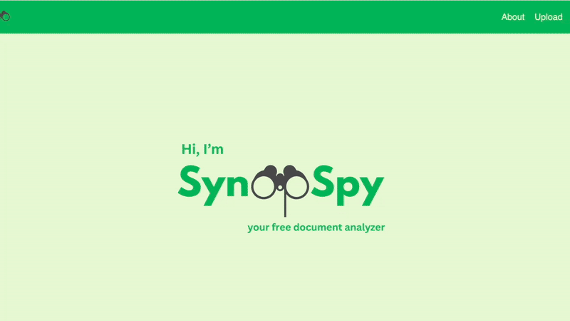
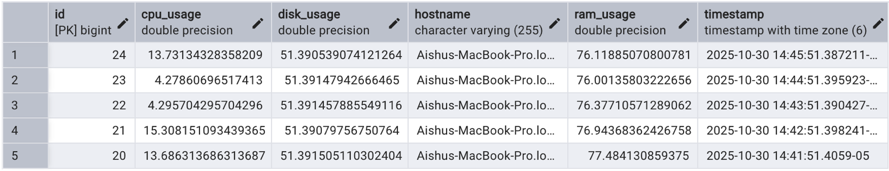
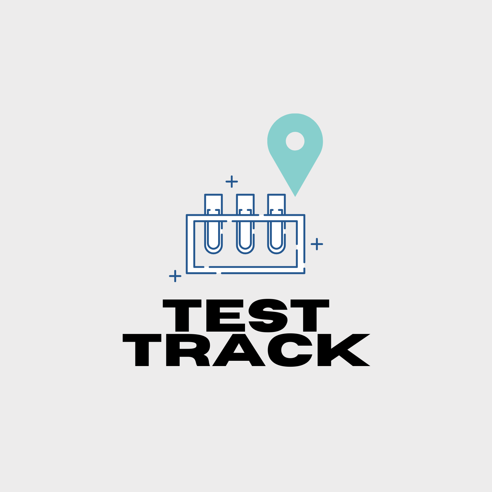
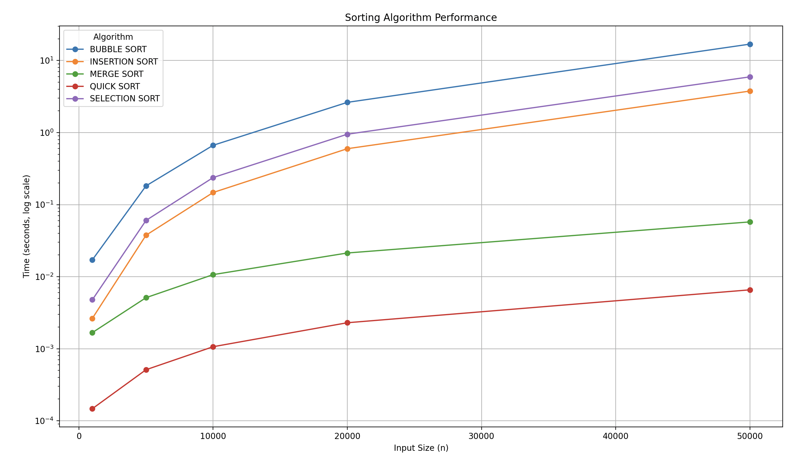

Hi there! I'm Aishwarya Ramesh.
Welcome to my personal portfolio website!
About Me
I am a Computer Science student with a love for creating innovative solutions. I specialize in web development and have experience with Python, Java, C/C++, Javascript. I have also used other frameworks/libraries like React, Node.js, FastAPI, and Flask.
Projects
SynopSpy
SynopSpy is a full stack web application that help users understand and assess complex documents. Some examples of documents SynopSpy helps analyze are legal fine print, court documents, or terms and conditions. SynopSpy uses NLP(Natural Language Processing) to summarize and analyze these documents, flag risky language, and assign a document safety rating.

System Monitor Sensor
This project is a system monitoring tool built using Java and Spring Boot. It collects real-time data on CPU usage, memory consumption, disk activity, and network statistics, providing users with insights into their system's performance.

TestTrack
TestTrack is a website that will help people keep track of the coronavirus testing locations around their area. The website will prompt the user to type in their zip code or address and will call certain Maps API’s to locate the closest COVID-19 testing locations. We will also specify the wait time allocated with each close testing location in order for them to optimize their time and get tested as soon as possible.

Sorting Algorithm Visualizer
This project implements and benchmarks five common sorting algorithms in C++. The algorithms implemented are Bubble Sort, Selection Sort, Insertion Sort, Quick Sort, and Merge Sort. The program then measures the time taken by each algorithm to sort these arrays and writes these results to a CSV file. A python script (plot.py) then reads the CSV data and visualizes the performance of each sorting algorithm using Matplotlib. The resulting plot shows the sorting time(in seconds and in log scale) as a function of array size (n).

Contact Me